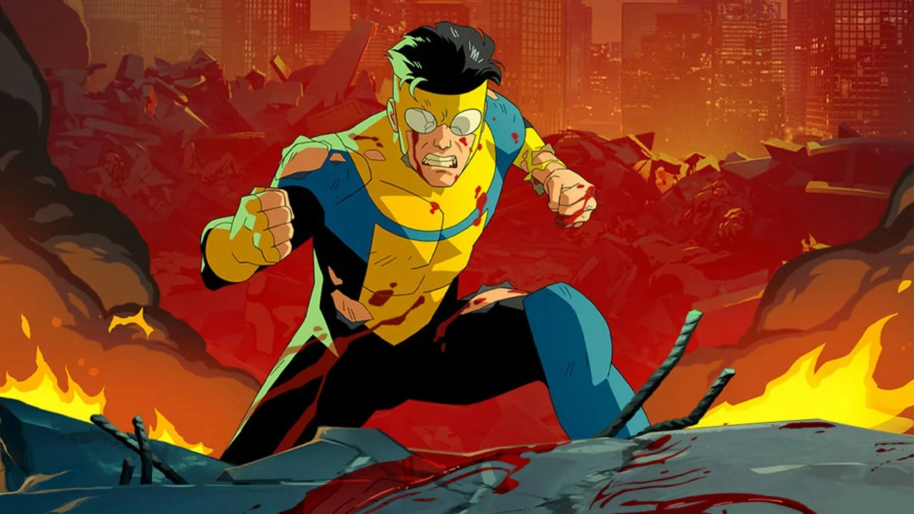
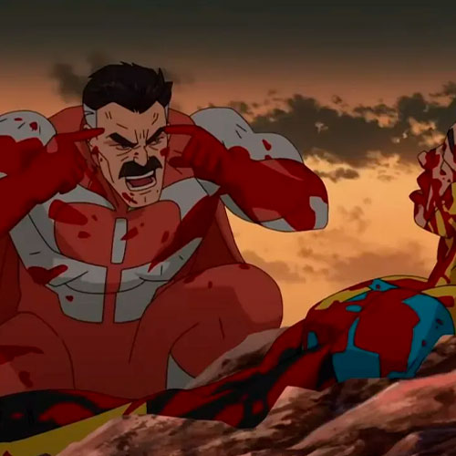
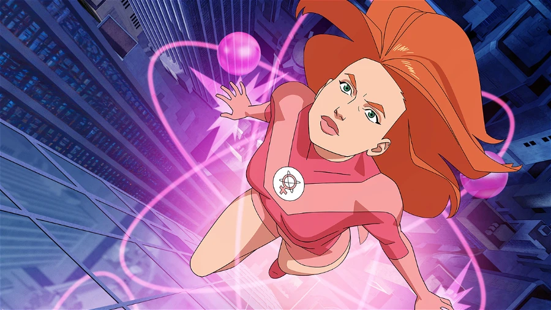
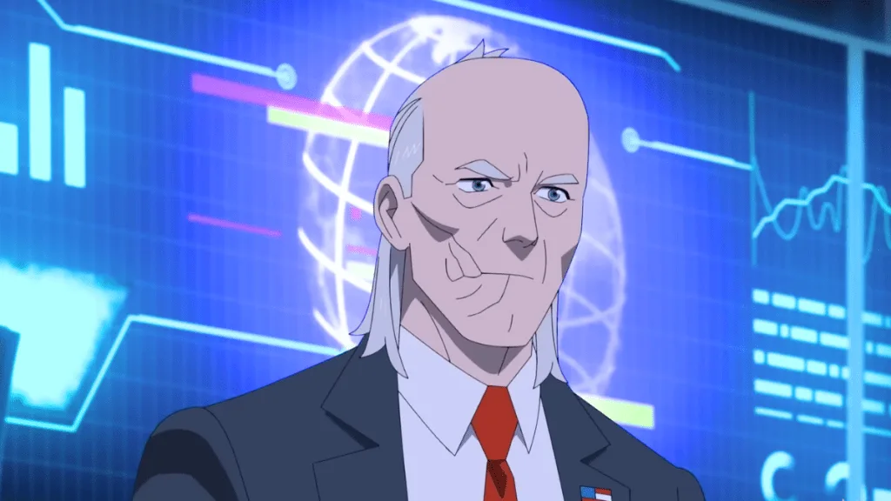
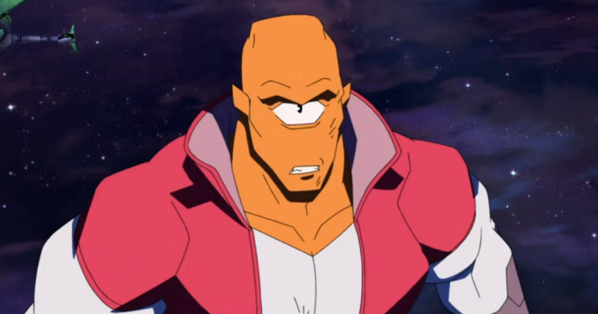

Análisis de Facciones y Poderes
Conoce las diferencias de poder y habilidades que separan a las facciones clave dentro de la Tierra y a nivel intergaláctico.
| Facción / Especie | Nivel de Amenaza | Habilidades Destacadas | Representante Notable |
|---|---|---|---|
| Imperio Viltrumita | Extremo (Galáctico) | Vuelo, superfuerza masiva, longevidad, invulnerabilidad | Omni-Man (Nolan Grayson) |
| Guardianes del Globo | Alto (Global) | Variadas (Magia, velocidad, armamento avanzado, fuerza bruta) | El Inmortal, Robot |
| Coalición de Planetas | Alto (Galáctico) | Tecnología avanzada, tropas biogenéticas y razas diversas | Allen el Alien |
| Agencia de Defensa Global | Medio/Alto (Terrestre) | Recursos gubernamentales ilimitados, teletransporte, tecnología oculta | Cecil Stedman |
| Imperio Flaxan | Variable (Interdimensional) | Envejecimiento acelerado/desacelerado portalado, invasiones tecnológicas | Líder Supremo Flaxan |
Personajes Principales
Invencible (Mark Grayson)

Joven mitad humano, mitad viltrumita. Lucha para estar a la altura de su herencia alienígena mientras intenta mantener una vida adolescente normal en la Tierra.
Omni-Man (Nolan Grayson)

El héroe más poderoso de la Tierra que oculta un oscuro propósito en nombre del Imperio original Viltrumita. Su complejo arco cambia el destino del universo.
Atom Eve (Samantha Wilkins)

Una poderosa heroína capaz de manipular la materia a nivel subatómico. Es un miembro clave del equipo de superhéroes y el gran apoyo emocional de Mark.
Robot

Un genio estratégico y líder táctico. Inicialmente liderando el Teen Team antes de tomar control de los nuevos Guardianes del Globo, oculta secretos importantes.
Cecil Stedman

El impasible director de la Agencia de Defensa Global. Trabaja en las sombras y hace todo lo necesario, aunque sea moralmente ambiguo, para proteger la Tierra.
Allen el Alien

Evaluador de campeones y representante de la Coalición de Planetas, se convierte en un fiel e indispensable aliado en la guerra contra el Imperio Viltrumita.